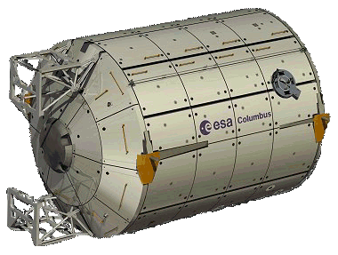

International Space Station (iss)
columbus (esa laboratory module)
Columbus is berthed to the starboard port of Node 2. (Harmony)

Columbus is berthed to the starboard port of Node 2. (Harmony)
The European Space Agency's (ESA) Research Laboratory, called Columbus, is Europe's largest contribution to the ISS.
Columbus is a multi functional pressurized laboratory that is permanently attached to the starboard berthing port of Node 2. (Harmony). Columbus was delivered to the Station by Space Shuttle Atlantis on mission STS-122 (Flight 1E) on 7 February 2008 and installed by shuttle and station crews.
During its 10-year projected lifespan, Earth-based researchers, together with the ISS crew, will be able to conduct experiments in micro gravity both internally and externally. These include life sciences, materials science, fluid physics, as well as a number of technological applications.
Like the navigator from Genoa for whom it was named, Columbus is set for a long journey of exploration. During its ten year mission hundreds of explorers will be able to benefit from it.
References: European Space Agency, Wikipedia
Columbus was also launched with internal equipment, including:-
* Data and mission command/measurement computers
* High rate multiplexer
* Mass Memory Unit
* Video Cameras (2)
* Monitor Audio system
* Master Alarm Light panel (2)
* Fire extinguisher (2)
* Portable Breathing Apparatus (2)
* Inter Module Ventilation valves and fans
* Thermal Control System valves
* Power Distribution Unit
* Vital Telemetry Computer units
* Heat exchangers
* Circulation Fan Assembly.
The Columbus laboratory has room for ten International Standard Payload Racks (ISPRs), eight situated in the side walls, and two in the ceiling area. Each rack is the size of a telephone booth and able to host its own autonomous and independent laboratory, complete with power and cooling systems, and video and data links back to researchers on Earth.
ESA has developed a range of payload racks, all tailored to squeeze the maximum amount of research from the minimum of space. These offer European scientists across a wide range of disciplines full access to a micro gravity environment that cannot be duplicated on Earth.
Columbus is fitted, at launch with five internal payload racks as follows:-
1. European Drawer Rack (EDR) - is a modular and flexible experiment carrier system for a large variety of scientific disciplines, providing basic accommodation and resources for experiment modules housed within standardised drawers and lockers.
2. European Physiology Modules Facility (EPM) - a set of experiments that will be used to investigate the effects of long-duration space flight on the human body. Experiment results will also contribute to an increased understanding of age-related bone loss, balance disorders and other ailments back on Earth.
3. Fluid Science Laboratory (FSL) - will accommodate experiments in the strange behavior of micro gravity liquids. These too, could bring far-reaching benefits on Earth: better ways to clean up oil spills, for example, and even improved manufacture of optical lenses.
4. European Transport Carrier (ETC) - accommodates items for transport and stowage. In orbit ETC will serve as a workbench and stowage facility.
5. Bio-lab - supports experiments on micro-organisms, cells and tissue cultures, and even small plants and small insects.
Columbus has four mounting points on the outside of its pressurized hull for external payloads with a maximum of 370 kg each.
Exposed to the vacuum of space, and with an unhindered view of the Earth and outer space, science packages can investigate anything from the ability of bacteria to survive on an artificial meteorite to volcanic activity 400 km below on the Earth.
Two external payloads were attached to the outside of Columbus shortly after the module was attached to the Station:-
1. SOLAR - a platform with three scientific instruments to study solar related phenomena.
2. European Technology Exposure Facility (EuTEF) - carries experiments requiring exposure to the space.

The Columbus laboratory consists of a pressurised cylindrical hull closed with welded end cones. To keep costs low and reliability high, Columbus shares its basic structure and life support systems with the Italian Space Agency's Multi-Purpose Logistics Modules (MPLM).
Columbus is a permanent component of the station.
MPLMs were designed to be carried in the U.S Space Shuttles and only attached temporarily to the station for un-loading and re-loading. Before the discontinuation of Shuttle flights one MPLM was refurbished and attached permanently to the station as the Permanent Multi Purpose Module [PMM].
The primary and internal secondary structures of Columbus are constructed from aluminum alloys. These layers are covered with a multi-layer insulation blanket for thermal stability and a further two tons of paneling constructed of an aluminium alloy together with a layer of Kevlar and Nextel to act as protection from space debris.
Columbus was built for the ESA by the European Aeronautic Defence and Space Co. (EADS) Space Transportation, leading a consortium of many sub-contractors.
Length: 6.9 m (Total module)
Volume
- Total: 75 m3 (Internal)
- Payload: 25 m3 (Total of payload racks)
Crew Support
- Number: 3
- Cabin temperature: 16 to 27 degrees Celsius
- Air pressure: Between 959 and 1013 hPa
- Heat rejection: Up to 22 kW
Diameter: 4.5 m (Largest)
Mass
- Without payload: 10,275 kg
- Payload - Launch: 2,500 kg (At launch)
- Payload - Max: 9,000 kg (At launch)
- On Orbit: 21,000 kg (Max)
Columbus ground control will involve researchers from all over Europe who will be able to control their own experiments directly from several User Centres. Their efforts will be channelled through the Columbus Control Centre, Oberpfaffenhofen, Germany, which will interface with the module itself and also ESA's NASA partners in the United States.